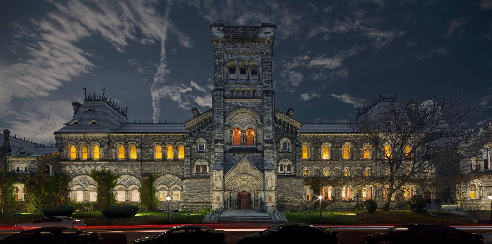
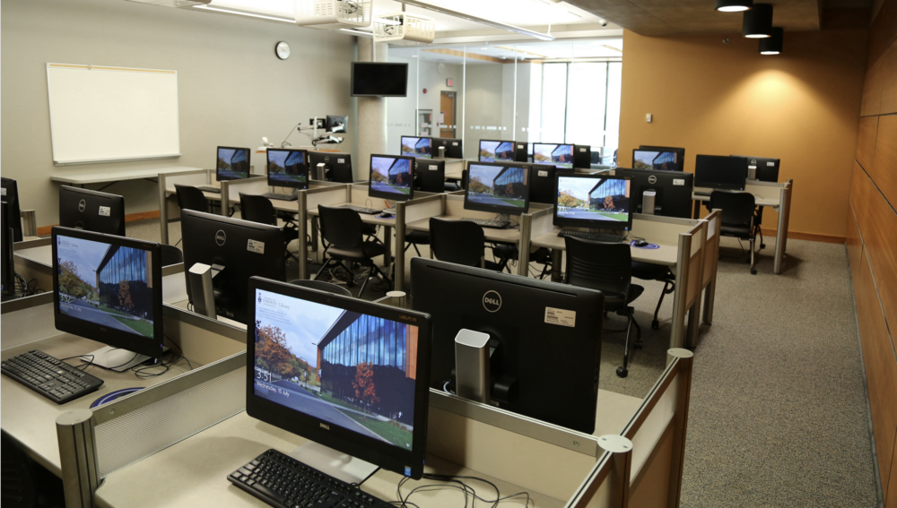
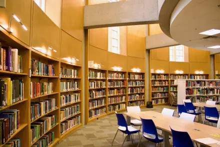
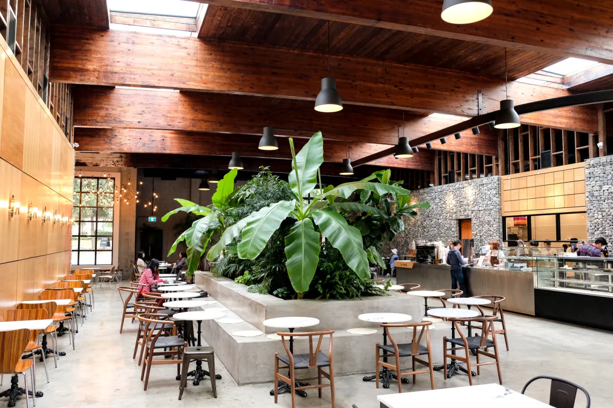
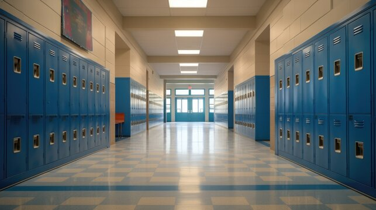
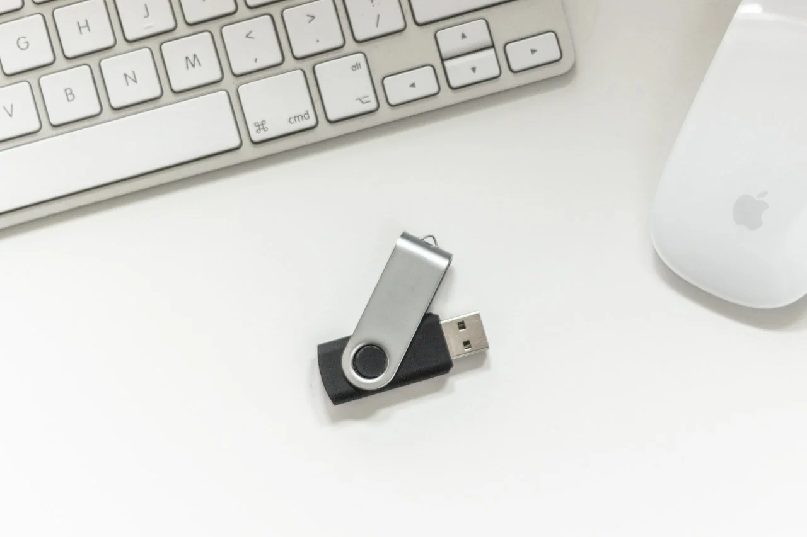

01 / CASE OPENED
Your presentation is tomorrow. The USB is gone.
It is 11:47 PM. Your group has already left campus, but the USB drive containing the final presentation is missing from the study room. You have one job: retrace the evening, follow the evidence, and find it.
Curiosity matters. Inspect details before moving on.


02 / THE STUDY ROOM
Start where the drive disappeared.
Three details stand out. Choose what to inspect.
03 / FOLLOW THE TRAIL
The clues point outside the room.
You only need one route, but the evidence will look different depending on your choice.

04A / LIBRARY TRAIL
The library is almost empty.
The printer station and checkout desk are still active.

04B / CAFÉ TRAIL
The café is closing, but one table is untouched.
A receipt and a handwritten note are still sitting beside an empty cup.

05 / LOCKER B17
You found the locker. Now prove you followed the evidence.
The sticky note gave you the locker. One earlier clue gave you the four-digit code.
06 / CASE CLOSED
The drive was never stolen.
Recovered Item
Presentation_Final_v8.usb
Inside the locker is the missing USB and a small note: “Moved this somewhere safe. You always leave it beside the laptop. — Sam”
